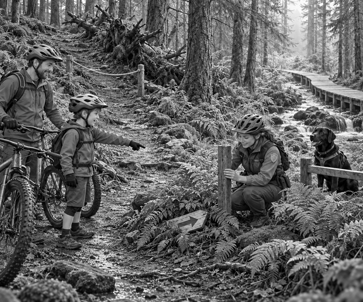

Wind had roared through Pine Ridge Wood.
By morning, the storm had gone.
Tom wheeled his mountain bike from the van.
Dad checked both brakes.
Tom checked his tyres.
Then he clicked his helmet strap.
Today they would ride the Blue Otter Trail.
Scout could not run on the bike trail.
He stayed with Ranger Mia beside the walking path.
His black tail thumped the fence.
The first blue arrow pointed into the trees.
Tom and Dad began to ride.
The trail climbed between tall pines.
Wet leaves shone on the ground.
Tom looked ahead.
He rode around the deepest puddles.
At last, they reached a fork.
Tom squeezed both brakes.
Dad stopped behind him.
There was a wooden marker post.
But its blue arrow had vanished.
One path climbed over dark roots.
The other path followed a stream.
“Which way?” asked Tom.
Dad put one foot on the ground.
“We do not guess,” he said.
“A wrong trail may be too hard for us.”
Trail fact: Coloured signs show how difficult a mountain-bike trail is. Riders should choose a route that matches their skills.
Dad opened the paper trail map.
The Blue Otter Trail stayed beside the stream.
It also crossed a wooden boardwalk.
Tom listened.
Water bubbled along the lower path.
Through the trees, he could see wooden boards.
“I think the stream path is blue,” he said.
“Those are good clues,” said Dad.
“But we will wait for Ranger Mia to check.”
A few minutes later, Mia walked up the service path.
Scout padded beside her.
He stayed behind the little trail fence.
Then his nose twitched.
Scout sniffed beneath a clump of ferns.
Woof!
Something flat was hidden under the leaves.
Tom pointed.
It was the missing arrow.
The wind had pulled it from the post.
Mia picked it up.
She checked the map on her radio.
“Tom is right,” she said.
“The blue trail follows the stream.”
Mia fixed the arrow firmly to the post.
She placed a rope across the steeper path.
That path was closed until its own sign could be checked.
Tom and Dad set off again.
Soon they reached the boardwalk.
It stood above a patch of soft, wet ground.
Boardwalk fact: Raised wooden paths help protect boggy soil. They also let water move underneath instead of becoming trapped.
Tom slowed down.
He kept his pedals level.
His tyres hummed over the boards.
Rum-rum-rum-rum.
At the other end, the forest opened into a bright meadow.
The blue arrows led all the way home.
Ranger Mia and Scout waited at the trail centre.
Scout bounced on his paws when he saw Tom.
“Who solved the mystery?” asked Mia.
Tom smiled.
“The map gave us clues,” he said.
“But Scout found the arrow.”
Scout gave one proud bark.
The missing blue arrow was missing no more.
1. What was missing from the trail fork?
2. Why did Tom and Dad stop instead of guessing?
3. What helped protect the wet ground?